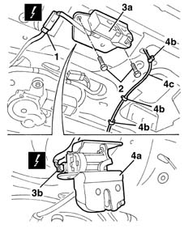

7015B10 single tailgate lock - r+r or repair with panel/protection removed
- Path
- Procedures > 70 FITTINGS > 7015 TAILGATE/ > 7015B tailgate locking/opening devices > 7015B10 single tailgate lock - r+r or repair with panel/protection removed
- Kind
- repair procedure (removal / refitting; the operation number is the code)
- Applies to
- all engines; all production periods
- Interactive page
- https://sloeber94.github.io/elrnDB-lYpsln/en/#/2429536
Applies to: all engines; all production periods
 Removing
Removing
 Refitting
Refitting1. Disconnect the electrical connection for the microswitch.
 | Name | Connector |
|---|---|---|
1 | Boot opening switch |
2. Undo the bolts.
3. Move the lock (3a) slightly and disconnect the electrical connection (3b) for the motor.
| Name | Connector |
|---|---|---|
3b | Boot lock gearmotor |
4. Remove the lock assembly (4a) releasing the emergency opening cable (4c) from the retainers (4b).
7015B70 tail-gate lock motor - r r and check lock supply line , if necessary.

Applies to: all engines; all production periods
Refitting
Removing7015B70 tail-gate lock motor - r r and check lock supply line
Check that the lock assembly is not damaged.
Place the lock assembly in position attaching the emergency cable and connecting the electrical connection.
Tighten the bolts.
 | Fastening | Component | Ø | Value (daNm) |
|---|---|---|---|---|
- | Bolt | TAIL-GATE LOCK | M6 | 0.9 |
Connect the electrical connection for the microswitch.
Test that the lock works properly and is correctly aligned with the striker.
Topics linked from this page (3)
- 7015B70 tail-gate lock motor - r r and check lock supply line
- I11 Boot opening switch
- N57 Boot lock gearmotor